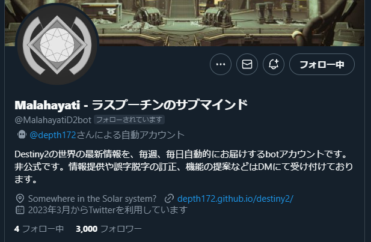

Twitter(現X)上で稼働中の、失われたセクターやナイトフォール、バンシー44の販売武器など、毎日毎週変わる情報を変わったタイミングで取得してTLに流すbotです。まだ見たことない人は@MalahayatiD2botを見に行ってみてください。Malahayatiについて
Destiny 2の最新情報を伝えるbot、Malahayatiについての解説とか説明とか裏話とか。
目次
Malahayatiとは？
このbotを作った経緯
このサイトの情報まとめを作るために情報収集をしていたとき、Destiny Data Setsというサイトを見つけました。いわゆる開発用に、Bungie APIの中身を見やすい形で色々見られるって場所です。そこでいろんなアイテムの情報とかを眺めながら、「APIっておもれえな～～～」とか思ってたわけです。
ぼくもなにか作ろうかな……とか思っていつものようにTwitterのTLを眺めていたら、ふと
ぼくもなにか作ろうかな……とか思っていつものようにTwitterのTLを眺めていたら、ふと
Destiny2関連で日本語の完全自動botってなくね！？！？
って閃きました。ぼくは開発者である以前に承認欲求モンスターなので、伸びそうだったり先人がいなさそうなコンテンツにはどんどん切り込みたくなっちゃいます。ちょうど実践的なアプリも作ってみたい欲があったので練習台としてやってみることにしました。
機能解説
botのそれぞれの部分がどのように動いてるかについて解説します。とはいえぼくもプログラムを書くのは全然うまくないので、結構パワーで処理してる部分もあります。良く言えば理解はしやすいです。
出典
アイドルマスター シャイニーカラーズコメントを読み込んでいます...